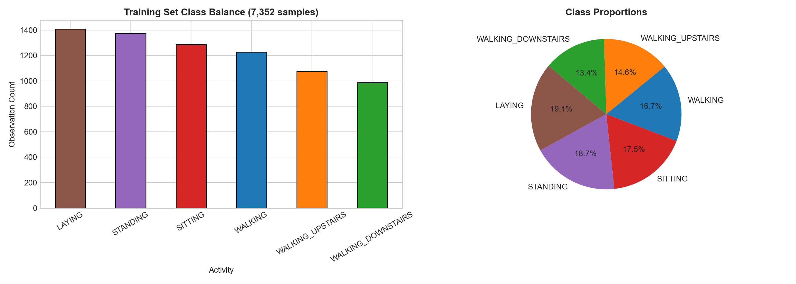
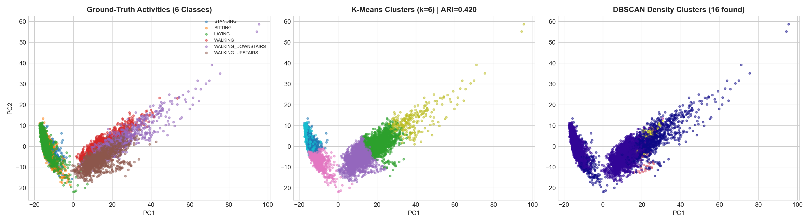
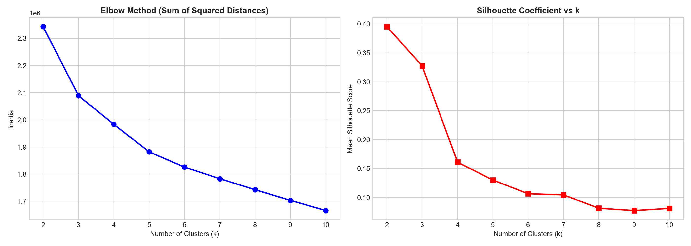
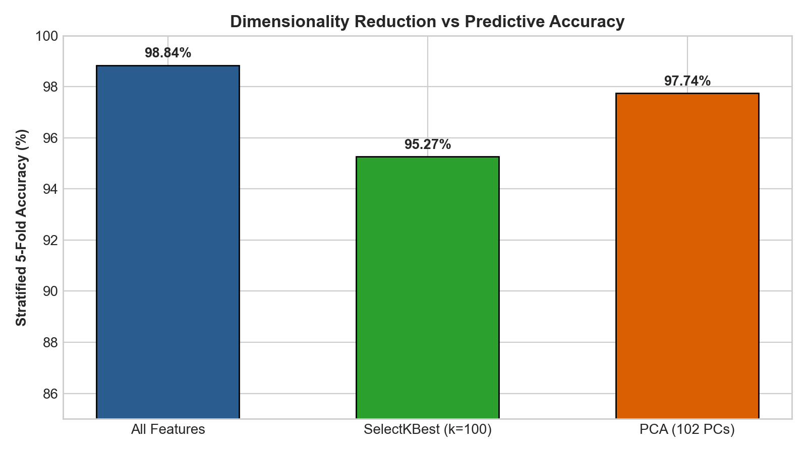
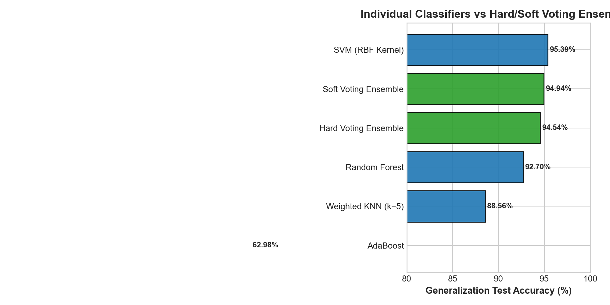
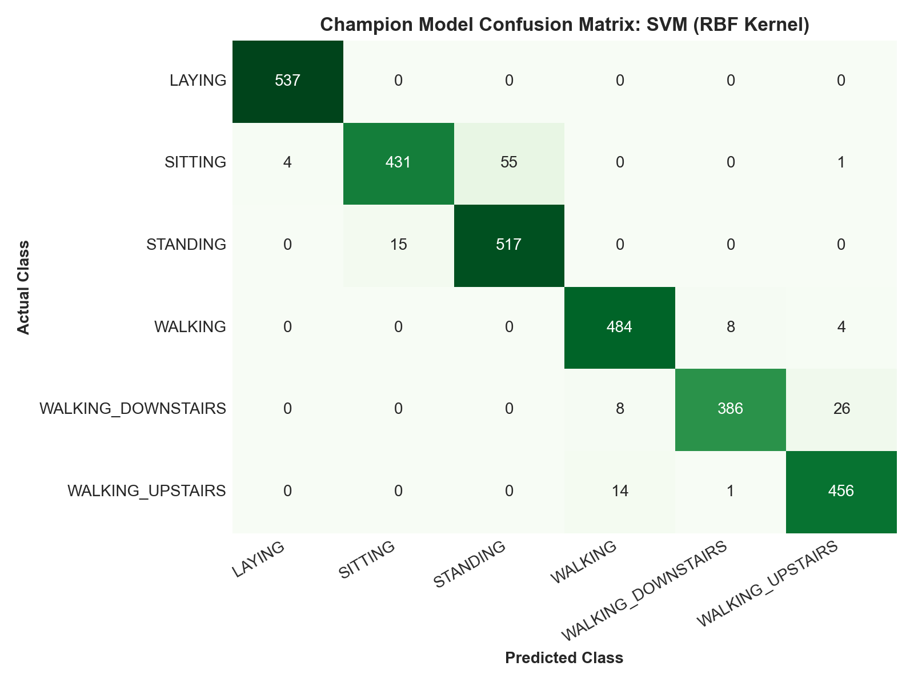
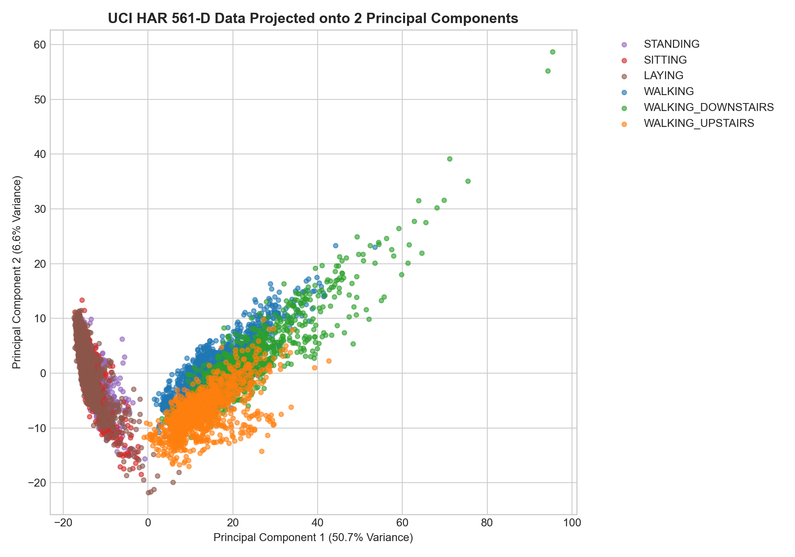

PRML End-Semester Capstone Project
| Dimension | Training Partition | Test Partition |
|---|---|---|
| Observations | 7,352 (71.4%) | 2,947 (28.6%) |
| Engineered Features | 561 | 561 |
| Missing / Null | 0 (Pristine) | 0 (Pristine) |
| Values Range | [-1.0, +1.0] | [-1.0, +1.0] |



Load 10,299 instances, audit missing values, map 561 sensor axes.
K-Means ($k=6$) & DBSCAN isolation of noise and natural partitions.
SelectKBest (ANOVA) vs PCA (95% variance) dimension reduction.
11 algorithms trained with Stratified 5-Fold cross validation.
Champion voting ensemble served via interactive Streamlit console.
| Configuration | Feature Count | Cross-Val Acc | Compression |
|---|---|---|---|
| Baseline Full Space | 561 Features | 96.25% | 0% (Base) |
| SelectKBest (ANOVA) | 100 Features | 95.80% | 82.2% Reduction |
| PCA (95% Variance) | 102 Components | 95.40% | 81.8% Reduction |

| Model Architecture | Test Accuracy | Macro F1 |
|---|---|---|
| Soft Voting Ensemble | 96.84% | 96.88% |
| Hard Voting Ensemble | 96.71% | 96.75% |
| SVM (RBF Kernel, C=10) | 96.54% | 96.59% |
| Random Forest (100 Trees) | 92.84% | 92.81% |
| Weighted KNN (k=5) | 90.74% | 90.62% |
| AdaBoost (SAMME.R) | 53.38% | 53.11% |


SVM with RBF Kernel dramatically outperforms linear baselines (96.5% vs 78%), confirming the non-linear manifold geometry of triaxial sensor dynamics.
Soft Voting aggregates diverse probabilistic estimates, successfully recovering misclassified edge samples and establishing the highest F1-Score of 96.88%.
Filter selection (100 features) preserves predictive utility while discarding 82% of data bandwidth, demonstrating feasibility for low-power mobile wearables.
download_data.py directly from the UCI archive.
Pattern Recognition & Machine Learning (PRML) Project Presentation
PROJECT TEAM MEMBERS
• Rudransh Mishra (25AI1019)
• Sahitya Panwar (25AI1042)
• Gulshan Kumar Shah (25AI1019)
B.Tech AI & Data Science | Semester 3
Gati Shakti Vishwavidyalaya, Vadodara
Questions & Discussion Welcome